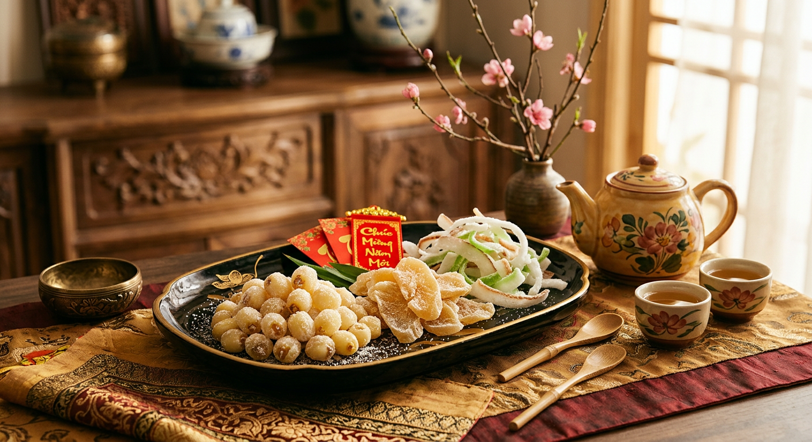

Tinh Hoa Ẩm Thực Ngày Tết
Mỗi món ăn mang lên mâm cỗ Tết là một câu chuyện thấm đẫm ân tình quê hương.


Nếp Nương Gói Trọn Ân Tình Đất Trời
"Gói bánh chưng xanh, buộc lạt ân tình
Nếp cẩm điểm tô, sắc xuân tươi rạng..."
Tại Bếp Nhà Ngọ, từng đòn Bánh Tét Lá Cẩm hay chiếc Bánh Chưng xanh đều được nâng niu tỉ mỉ từ khâu chọn nếp cái hoa vàng hạt đều tăm tắp, đến thịt mỡ và đậu xanh bùi béo. Sự hòa quyện giữa vị mặn của thịt, vị bùi của đậu và hương thơm lừng của nếp mới không đơn thuần là một món ăn, mà là bản giao hưởng gọi Tết về, gói ghém trọn vẹn lời chúc năm mới an khang, sum vầy và thịnh vượng.
Giò Lụa Chả Quế Thượng Hạng
"Mâm cao cỗ đầy không gì sánh bằng tấm lòng.
Giò chả thơm lừng, đậm tình nồng nàn góc bếp."
Giò Chả là phần tinh túy nhất trong mâm cỗ truyền thống...
Miếng chả quế thì lại đòi hỏi sự khéo léo...


Ngọt Ngào Dư Vị Khay Mứt Tết
"Trà đắng đố kị mứt thơm ngọt
Như đời nhân thế nếm đắng cay..."
Khay mứt Tết không chỉ là niềm vui trẻ nhỏ...
Dư Vị Lai Rai Nồng Đượm
"Khách đến dâng chén sương lam
Kèm thêm chút mồi thắm đượm thâm giao"
Ngày Xuân sao có thể thiếu những chầu hàn huyên...